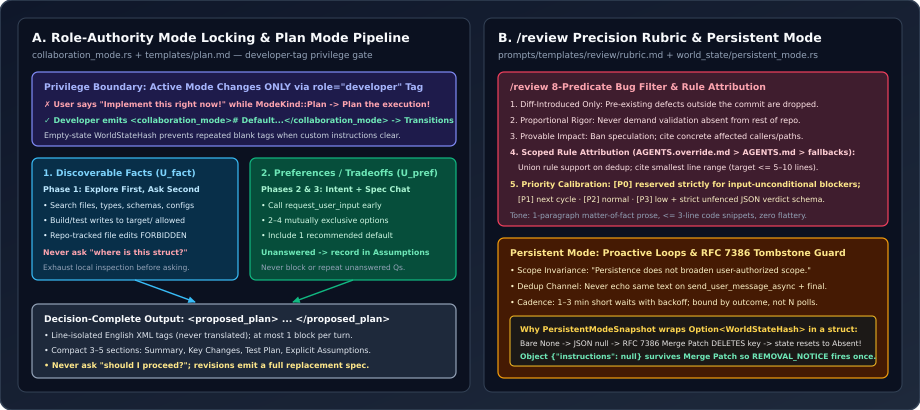

Collaboration Modes & Prompt Engineering: Plan Mode State Locking, Fact-vs-Preference Splits, /review Rubrics & Persistent Mode
Great agent prompts do not read like motivational essays—they read like distributed protocol specifications. Inside collaboration-mode-templates/, prompts/templates/, and core/src/context/world_state/, OpenAI Codex encodes strict privilege boundaries against imperative user mode-hijacking, partitions epistemic unknowns into repo-discoverable facts versus non-discoverable preferences, filters code-review noise through eight conjunctive predicates with line-level AGENTS.md attribution, and guards persistent follow-up state against an RFC 7386 JSON Merge Patch deletion trap.

AGENTS.md rule attribution and PersistentModeSnapshot wrapping Optioncodex-rs: role-locked collaboration modes, Plan Mode’s epistemic unknown partition, the 8-gate /review rubric, and PersistentModeSnapshot’s RFC 7386 tombstone defense.1. Role-Authority Mode Locking & Preset Surgery (collaboration_mode.rs)
Every dual-mode coding agent hits the same failure mode in production: the user toggles Plan Mode in the UI, discusses a tricky refactor for three turns, and then types an imperative message like “Fix the auth middleware bug and run tests.” Without an explicit authority rule, the LLM obeys the user’s imperative verb and mutates files while the UI badge still says PLAN.
Both collaboration-mode-templates/templates/plan.md (lines 7–9) and default.md (lines 3–5) close this loophole by binding mode transitions strictly to message role:
“You are in Plan Mode until a developer message explicitly ends it. Plan Mode is not changed by user intent, tone, or imperative language. If a user asks for execution while still in Plan Mode, treat it as a request to plan the execution, not perform it.”
Formally, let $M_t \in \{\mathsf{Default}, \mathsf{Plan}\}$ be the active collaboration mode at step $t$, and let $(r_t, x_t)$ be an incoming history item with role $r_t \in \{\mathsf{system}, \mathsf{developer}, \mathsf{user}, \mathsf{assistant}\}$. The state transition function $\delta$ ignores every non-developer message:
In Rust, CollaborationModeState::from_collaboration_mode (core/src/context/world_state/collaboration_mode.rs, lines 28–81) pairs this prompt contract with two subtle state-machine invariants:
let instructions = instructions.map(|instructions| {
if update_plan_enabled {
return instructions;
}
let builtin = match catalog_instructions {
Some(_) => !custom_model_catalog,
None => {
let bundled = ResolvedModelMessages::bundled().collaboration_modes();
instructions == bundled.default.text() || instructions == bundled.plan.text()
}
};
if builtin {
without_update_plan_instructions(&instructions)
} else {
instructions
}
});
// Keep an empty-state snapshot so removing instructions clears retained history only once.
let fragment = CollaborationModeInstructions {
instructions: instructions.clone().unwrap_or_default(),
};
let snapshot = CollaborationModeSnapshot::Current {
mode: collaboration_mode.mode,
model: collaboration_mode.settings.model.clone(),
instructions: Some(WorldStateHash::from_fragment(&fragment)),
};- Whole-String Bundled Preset Verification: When the
update_planchecklist tool is disabled for a session, Codex surgically strips## Plan Mode vs update_plan toolparagraphs from built-in templates viawithout_update_plan_instructions—but only after proving via exact whole-string comparison againstResolvedModelMessages::bundled()(and!custom_model_catalog) that it is not mangling custom user-authored developer instructions. - Empty-Fragment Hash Deduplication: Notice lines 68–75 and 123–136: even when custom instructions are cleared to
None, Codex still computesWorldStateHash::from_fragmentover the emptyCollaborationModeInstructionswrapper. Clearing instructions therefore emits one retiring empty tag and stays silent on every subsequent turn.
2. Plan Mode’s Epistemic Split: $U_{\text{fact}}$ vs. $U_{\text{pref}}$ (plan.md)
Why do naive planning agents frustrate senior engineers? They commit two opposite sins simultaneously: they ask lazy questions the codebase already answers (“Where is the router defined?”), while silently guessing irreversible product tradeoffs (“I assumed we can drop backwards compatibility”).
plan.md (lines 41–91) eliminates both sins by partitioning the space of task unknowns $U$ into two disjoint sets—Discoverable Facts ($U_{\text{fact}}$) and Non-Discoverable Preferences ($U_{\text{pref}}$)—across a three-phase conversational funnel:
| Phase / Rule | Allowed & Required Actions | Explicitly Forbidden Actions |
|---|---|---|
Phase 1: Ground in Environment (L41-50) | Run at least one targeted non-mutating exploration pass first; build/test commands writing to target/ or .cache/ are explicitly permitted (L28). | Editing repo-tracked files, running file-rewriting formatters/codegen, or asking any repo-answerable question before exploring. |
Phase 2: Intent Chat (L51-55) | Lock goal, success criteria, scope boundaries, constraints, and high-impact tradeoffs via request_user_input (2–4 mutually exclusive choices + recommended default). | Guessing when high-impact product ambiguity remains, or padding request_user_input with obviously wrong filler choices (L65). |
Phase 3: Implementation Chat (L56-59) | Resolve interfaces, schemas, data flow, edge cases, and acceptance tests; if a preference question goes unanswered, adopt the recommended default and log it under Assumptions (L90). | Treating unanswered optional questions in Default Mode as turn-blocking, or asking permission escalations via request_user_input (default.md:15-17). |
Finalization: <proposed_plan> (L92-128) | Emit at most one decision-complete spec wrapped in line-isolated English <proposed_plan> tags (3–5 compact sections grouped by subsystem behavior, naming $\le 3$ paths unless required). | Translating the XML tag names in non-English chats, emitting partial diff patches on revision turns (must emit a complete replacement), or asking “should I proceed?” (L124). |
Look closely at line 28 of plan.md: allowing cargo check or pytest to write untracked build artifacts into target/ or .cache/ while banning repo-tracked file edits is a huge practical distinction. A pure read-only filesystem lock would break compiler feasibility checks during planning; scoping the prohibition to repo-tracked state lets Codex verify whether a proposed trait signature actually compiles before presenting the plan!
3. Engineering High-Precision Code Reviews (review/rubric.md)
Left unconstrained, LLM code reviewers optimize for recall over precision: they flag pre-existing tech debt, demand enterprise input validation in throwaway scripts, speculate wildly about hypothetical callers, and wrap nitpicks in sycophantic fluff (“Great PR! Consider adding comments...”).
OpenAI’s /review prompt (prompts/templates/review/rubric.md, lines 10–96) enforces an 8-predicate conjunctive gate. A candidate issue $f$ may be emitted if and only if all eight predicates hold simultaneously:
Three engineering mechanisms inside rubric.md stand out as reusable templates for any production review agent:
- Proportional Rigor & Provable Call-Graph Impact (
L14, L18): Predicate 3 forbids demanding rigor absent from the surrounding repository, while Predicate 7 states verbatim: “It is not enough to speculate that a change may disrupt another part of the codebase, to be considered a bug, one must identify the other parts of the code that are provably affected.” - Scoped Repository Rule Attribution (
L46-53): When changed files fall under repository instructions, the reviewer resolves precedence acrossAGENTS.override.md$\succ$AGENTS.md$\succ$ configured fallbacks, deduplicates findings by(location, defect/remedy)while unioning their supporting rules, and cites the smallest supporting line range (targeting $\le 5\text{–}10$ lines) directly in the 1-paragraph body. - Unconditional
[P0]Calibration & Whitespace-Exact Suggestions (L42-44, L56-95):[P0]is strictly restricted to universal blockers that “do not depend on any assumptions about the inputs,”suggestionblocks must preserve exact leading tabs/spaces without outer indentation drift, code quotes are capped at $\le 3$ lines, flattery is banned, and the final verdict must serialize as raw unfenced JSON containingconfidence_scoreandoverall_correctness.
4. Persistent Mode & The RFC 7386 Tombstone Trap (persistent_mode.rs)
When an agent monitors a long-running CI build, deployment, or cluster job across sleeps and automatic continuations, two failure modes appear: authorization drift (inventing unrequested side quests) and notification spam (echoing status text across both async progress messages and final turn outputs).
prompts/templates/persistent_mode.md (lines 1–13) constrains proactive follow-ups along four axes:
- Scope Invariance: “Persistence does not broaden that scope.” Safe, non-mutating verification checks are allowed; any action expanding authority or mutating external state must first request approval
{{ approval_request_channel }}. - Dynamic Channel Interpolation: In
PersistentModeState::new(persistent_mode.rs:54-72), Codex substitutes" via functions.send_user_message_async"when the async user-messaging tool is exposed on the turn, and""otherwise—preventing hallucinated tool references on subagents that lack user-facing channels. - Cross-Channel Deduplication & Adaptive Cadence: Never send equivalent text through both
functions.send_user_message_asyncandfinal; bound monitoring loops by target outcome rather than an arbitrary poll count $N$, using $1\text{–}3$ minute short waits with backoff.
Finally, inspect lines 47–51 and 95–116 of core/src/context/world_state/persistent_mode.rs—a five-line masterclass in serialization edge cases:
#[derive(Clone, Debug, PartialEq, Eq, Serialize, Deserialize)]
pub(crate) struct PersistentModeSnapshot {
// Keep an object: JSON null would delete the section and lose its disabled state.
instructions: Option<WorldStateHash>,
}Remember from Chapter 01 that WorldState persists section checkpoints by applying an RFC 7386 JSON Merge Patch onto the previous metadata JSON object! Under RFC 7386, if Snapshot were a bare Option<WorldStateHash>, transitioning from active (Some(hash)) to disabled (None) would serialize the section patch as "persistent_mode": null—which RFC 7386 interprets as delete the "persistent_mode" key from the map! On the next turn, previous would deserialize as PreviousSectionState::Absent instead of PreviousSectionState::Known(None), masking the state history. Wrapping Option<WorldStateHash> inside a struct serializes the disabled state as {"persistent_mode": {"instructions": null}}, preserving the key inside the map while cleanly emitting REMOVAL_NOTICE (“The previously provided persistent-mode instructions no longer apply.”) exactly once.
5. Questions worth answering
default.md forbid writing multiple-choice questions in plain assistant text when request_user_input is unavailable or bypassed?Line 19 of default.md states: “Ask the user directly with one concise plain-text question instead. Never write a multiple choice question as a textual assistant message.” In TUI and IDE surfaces, structured multiple-choice menus belong exclusively to request_user_input widgets; rendering ASCII A) / B) / C) lists in prose creates a broken UX affordance where keyboard selection shortcuts do not work and forces multi-question walls of text instead of a single focused blocker question.
<proposed_plan>, and asks a quick clarifying question that does NOT change the plan, what must the assistant output?Per plan.md line 128: answer the clarifying question before the block, and then reproduce the prior <proposed_plan> unchanged in the same response. Client UIs attach the ”Implement Plan“ action button to the latest turn’s <proposed_plan> block; omitting it on a harmless follow-up question would hide the one-click handoff button right when the user is ready to execute.